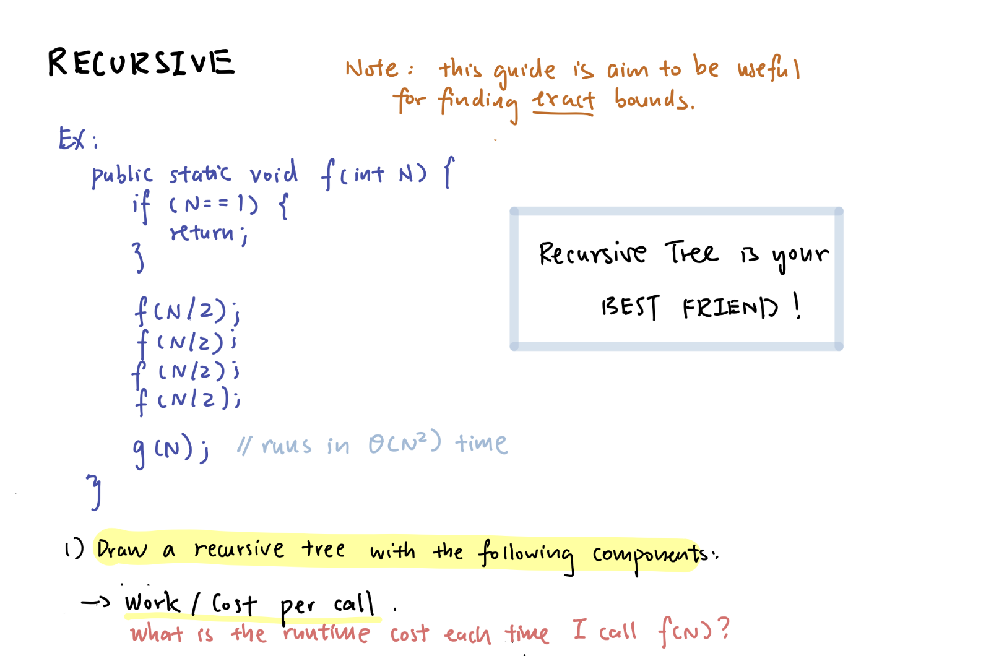
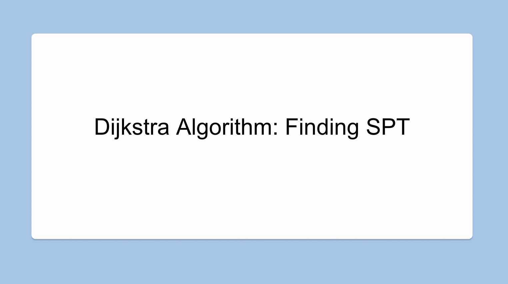

Teaching
Teaching was one of my most cherished experiences in undergrad. Here are some highlights from each phase of my teaching career at Berkeley:
Spring 2023
Tutor - CS 61BI had a lot of fun helping students in packed office hours, teahing my own tutoring sections, and creating additional notes for my students.

Extra guides View ↗I also got to teach my favorite graph algorithm (i.e. Dijkstra's algorithm) in my TA interview. I reused these slides to teach my friends who were preparing for software engineer interviews even now!

Teaching demo: Dijkstra's algorithm View ↗Summer 2023
Teaching Assistant (first time!) - CS 61BLThis was my first time being a TA and had the opportunity to teach the same group of students for the whole summer! I really wanted to build a sense of community and connect with my students, so I did a little "UX Research" to improve my section.
Fall 2023 – Spring 2025
Student Support TA - CS 61B/CS 61BLStudent support is one of the core administrative duties of running the course. It mainly consists of processing extension requests for students and holding support meetings where students can share any challenges they are facing both within and outside of the class.
I really gravitated towards this role because I was really curious about how to help students overcome psychological and social barriers to learning. At this position, I had many memorable conversations with students about their doubts and aspirations of pursuing CS, shared what I learned from students with course staff to "iterate our product" (i.e. the class), and encouraged discussions about how to best support students beyond office hours and discussion sections. My work ultimately kickstarted my research career and got to share our experiences with the broader CS Education community with my Student Support partner Kevin!
Some publicly viewable changes I made to the course:
Summer 2024
Co-Instructor - CS 61BLI got to instruct with some wonderful people, including my long-time teaching partner Erik! My favorite lecture was 61Behind the Scenes, and I also had a lot of fun writing exam questions.

Fall 2024 – Spring 2025
Head TA - CS 61BGot to manage the course with some cool people for the coolest professor, mentor newer staff, and learn from the wonderful CS Scholars students : )
I also met some of my closest friends through teaching! Currently exploring Boston with Josh and David.